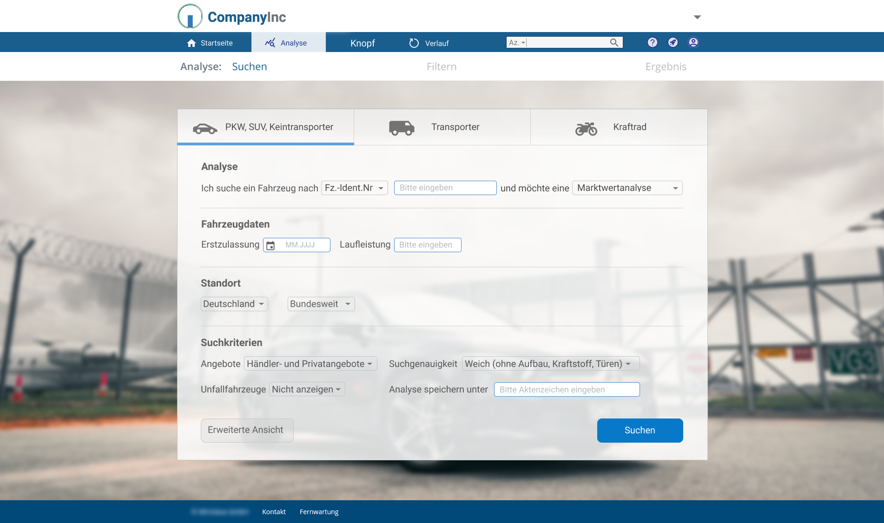

Redesigning an Analysis Tool
After being asked to redesign the analysis tool for the value of vehicles, I was aiming at balancing modern design with usability. With data gathered from Google Analytics, some of the previous filter functions have been disabled. The color of the text fields was changed from light gray to white, as gray input fields are often perceived to be “grayed out” by the users. Furthermore, in the new design, the white text files are easily distinguishable from the grayish background and immediately catch the user's eye. The background color of the drop-down menus is still grayish and not as well distinguishable from the background. This was, however, an intentional design decision, as the analysis criteria are set by default to the most common use cases. So that most of the users only have to fill in four text fields and do not have to make a selection from the drop-down menus. The font color of the drop-down menus was changed so that there is a steeper contrast between the text color and the background color, which makes the text more readable. It was also ensured that the text contrast is in line with the Web Content Accessibility Guidelines.
Furthermore, the input fields were grouped into categories to enable the users to get a better overview. Additional functions will get displayed depending on the user input. Like the option to search in a specific kilometer radius if the user chooses a local analysis from the drop-down menu. It is possible to blend in an advanced version of the analysis tool to assist people that do not initially find their vehicle, or that need further filter options for some other reason. To make the interface easily understandable, I, furthermore, included visual cues to indicate which kind of vehicle is currently selected. Besides that, I used a background image that resembles the background image of the create account page and the login page. With this, I intended to foster the perception of the brand's identity in design.

The background image, however, transitions from one vehicle to another depending on the selected vehicle type in the analysis tool. This is supposed to provide another visual cue for the current selection of the vehicle type, as it was found that searching in the wrong category of vehicles was a common source of error among the users.